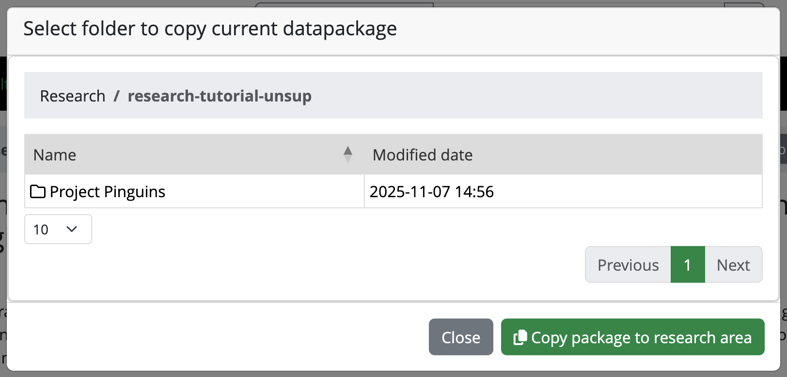

Explain the difference between the Research area
and the Vault area in Yoda
Introduction
In this scenario we are going to pretend that you are a researcher
who knows a dataset exists in the Vault of the Yoda instance you are
working in. You only know some information about that dataset (i.e.:
some metadata), but you know you want to use the data in the
dataset.
By the end of the exercise you will know how to
search for datasets in Yoda and work with the data in a
dataset. You will also learn the difference between the
Research area and the Vault area in
Yoda.
Callout
For the exercises today, we will be alternating between the Research
and the Vault tabs. The idea behind those two tabs is that there is one
working area, separated from a frozen
area.
The working area is where you perform all the usual data and metadata
managing. Think of operations related to adding, removing, modifying or
shuffling files around (for the data), and also analogous operations for
the metadata. The frozen area is a place to make datasets unmodifiable,
sort of snapshots if you will, so that they can be safely used by
others.
In Yoda’s terms, the working area is the Research
tab from the menu, and the frozen area is the
Vault.
Preparing a working place in the Research space
When you log into the the portal of a Yoda instance (or Yoda server,
or, from now on simply Yoda) you are confronted with a screen showing a
menu bar at the top. That menu bar allows you to choose between, at
least, two tabs; namely: Research and Vault.
Portal detail: Research and Vault tabs
We will now pretend that you are working in a project of your own.
You will therefore need to create a folder for that project. Since you
ultimately want to actively be working with a dataset for this exercise,
you will be creating now that folder in the Research area.
Here are the steps you need to follow:
In the Yoda portal, click on the Research tab of the main
menu.
You can see one folder or a list of folders. These are the groups
that you are a member of. From the list of folders that appear, click on
the research-tutorial-unsup folder.
You will create a folder here to represent your project. Do so by
clicking on the Create Folder button.
Give the new folder you are creating a name similar to “Project
X”, where X should be something that you will be happy to work with,
like: “Project Peter” or “Project Flamingos”. Please, remember what you
choose, because the rest of the course attendants will be creating their
own folders here too, so you may see a different list every time to
look.
You are now set to go! This project folder will be the place where
you will import the dataset that you are now going to search for during
the rest of this section.
Searching for a dataset in the Vault
Callout
In Yoda you can search in the Vault for datasets that have been
placed there by you or others within your same groups. Yoda requires
that you choose in which parts of a dataset you want to search, and the
options it offers include:
search by file name
search by folder name
search by metadata
search by status
As explained at the beginning, you are pretending now to be a
researcher in need for a dataset that you know exists in this Yoda
instance. The information you have is little: it involves a picture
taken at the Gulf of Biscay. That is precisely what you need for your
research! Let us find it now.
Challenge
Challenge 1: search by filename
Can you find the file?
1. In the Research tab of the Yoda portal, see that there is a search
box at the top
2. Type in the search box a word or words that you think are
reasonable for the little information you have about the dataset, such
as: “ocean” or “Biscay” or “Atlantic”
3. Hit “Enter” or click on the magnifying glass button to the right
of the search box
The result is probably going to disappoint you: you will not find
anything. By default, when you search this way, you exercise a “Search
by file name” (see that “search by filename” is selected on the
drop-down list to the left of the search box). Let us try a different
search method in the next section.
Challenge
Challenge 2: Search by folder
Can you find the folder?
1. To the left of the search box of the previous search, choose now
“Search by folder”.
2. Type in the search box a word or words that you think are
reasonable for the little information you have about the dataset, such
as: “ocean” or “Biscay” or “Atlantic”
3. Hit “Enter” or click on the magnifying glass button to the right
of the search box
The result is probably going to disappoint you this time as well: you
will not find anything. Let us try yet a different search method.
Challenge
Challenge 3: Search by metadata
Can you find the metadata?
1. To the left of the search box, choose now “Search by
metadata”.
2. Type in the search box a word or words that you think are
reasonable for the little information you have about the dataset, such
as: “ocean” or “Biscay” or “Atlantic”
3. Hit “Enter” or click on the magnifying glass button to the right
of the search box
Voilà! You should now have at least one result. However, how do you
know what is the good one? You will have to bring it to your working
area in order to inspect it.
Callout
🍝🍔🍜 Food for thought
What is the name of the root folder of the dataset? Is this folder in
any way related to the name of any of the folders you can see in the
Research area? How is it related?
Importing a dataset to the Research space
You are now going to import the dataset you found in the Vault, into
the project folder that you created in the Resarch area a few steps ago.
Remember? You called it Project<something>.
From the list of results of your search, click on the one that
you want to work with (a hint: perhaps on the latest modified date, or
after viewing the contents).
Note that you are now in the Vault tab from the main menu. That
is because you are working with a dataset that was brought to the Vault
as a way to “share it in an unmodifiable state”.
Discussion
Challenge 4: inspect the metadata
Click on the Metadata button. Can you answer now some of the
questions below? For example: can you now explain why you were not able
to find the data set when searching by name or by folder, but you were
when you searched by metadata?
Questions:
What is the file name of the picture?
What is the folder name of the picture?
When was the picture taken?
Who took the picture? What is their affiliation?
Which three location tags have been given to the
picture?
What does the picture show (i.e.: can you describe what the
photograph has captured)?
Click on the “Close” button of the pop-up that is displaying the
metadata. You should be seeing the folder contents again.
In order to import the dataset into your Project folder, click on
the Actions button now. Then select the option that reads: “Copy
datapackage to research space”.
A pop-up will appear displaying your groups:

Picture of the pop-up for copying the
datapackage to research space
Choose the research-tutorial-unsup folder. Then choose
your Project folder within it.
When you have selected your Project folder, click on the button
“Copy package to research area”.
Working with the dataset
You have now found and imported a dataset from the Vault into your
Project folder. Let us simulate that you reuse the data
by looking at the picture!
In the Yoda portal, click on the Research tab from the main
menu
Navigate to your Project folder by clicking the
research-tutorial-unsup folder, and then click on your
Project folder.
You should now see a new folder in your Project folder, whose
name includes a large number between square brackets. This number is a
Unix epoch, which you can consider to be a timestamp indicating when you
made a copy of the folder. This notation prevents unexpected overwrites
when moving datasets around.
Click on the new folder name. You will see it has another folder
within it called original, and there is a
yoda-metadata[epoch].json file there as well. If you click
the Metadata button, it will be empty. How come!? Well, look in the
original folder instead. Click, therefore, on the
original folder.
You should now see a picture file and a
yoda-metadata.json file as well.
Click on the Metadata button now that you are in the original
folder. You should now see a lot of metadata fields, and you can even
modify them! This metadata should be the same you saw before you
imported the dataset into your working area.
You can click on the “Close” button of the form to go back to the
list of files.
In order to simulate using the data, you can now click on the
three dots to the right of the picture, and select View. That will
display the picture in a pop-up. Alternatively, you can click on
Download to simulate that you save a dataset onto your laptop’s hard
drive.
Lastly, click on the yoda-metadata.json file, which
will preview the .json file in your browser. You can also open this
.json file on your laptop with your favourite text editor. Can you
identify any of the information there? Exactly! It is the same metadata
as you see when you click on the Metadata button of the folder. Handy,
right? This way you will always have the metadata along with the data,
in a machine-workable format!
You have now completed this section. Feel free to move on to the next
exercise at your own pace, but make sure you have answered the questions
in the challenge
above to verify that you have found the intended dataset.
Key Points
You can create folders and upload files in the Research area
You can search for files, folders, and metadata for Groups that you
have access to
Copy a datapackage from Vault to Research space to continue working
with it
Look at the metadata to learn more about a dataset